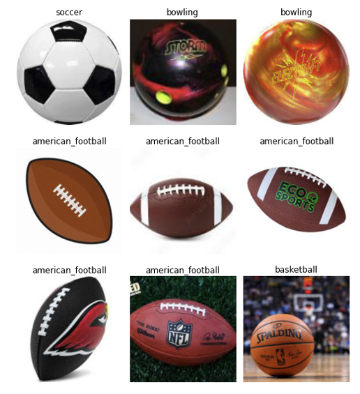

What data was used ?
Since Google has recently changed its policies when it comes to APIs and image gathering the data collection process for this project was relatively easy and manual. A Google Chrome plugin called Fatkun was used to manually download around 50 pictures per ball type, all of which were placed in the following google drive folder (link).
Since the data collection was done manually a lot of the data cleaning was being done automatically, where I was directly filtering out low quality images that clearly have low quality and/or wrong representations of the respective sport.
The sports for which ball images where collected (which were also the data's labels) are:
• American Football
• Baseball
• Basketball
• Bowling
• Golf
• Rugby
• Soccer
• Tennis
• Volleyball
Each of these sport had a folder with tens of images for its ball, and each image is associated with a tag/label that will be used by
the deep learning model. Example below:
